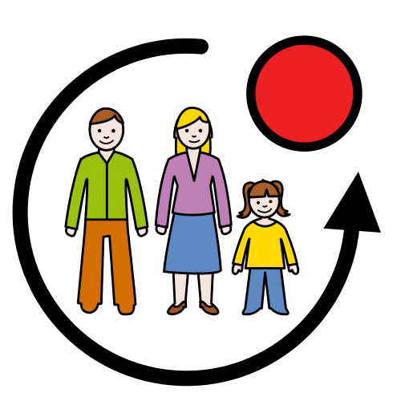
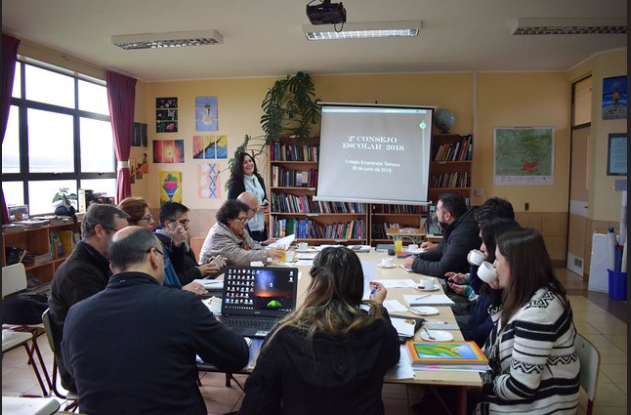
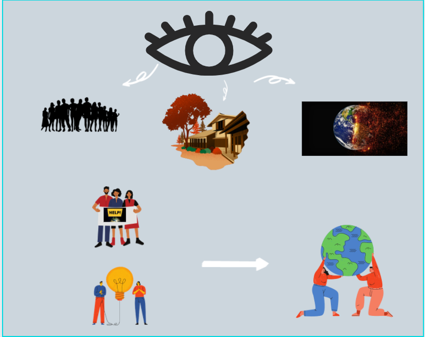

Observa las reuniones de tu iglesia promueve valores como el amor, la compasión y la solidaridad, que son fundamentales para cambiar el mundo. A través de la fe y la acción, podemos trabajar juntos para hacer del mundo un lugar mejor para todos. En primer lugar piensa en qué te gustaría y podrías contribuir para mejorarlo o cambiarlo.
En segundo lugar, como eres miembro de tu grupo de jóvenes tienes que movilizar a todos para que te ayuden a cambiar o mejorar aquello que has decidido.
El reto final será que participes en la reunión de jóvenes de tu iglesia, haciendo una reflexión, para defender una idea, una actividad que ayude cambiar el mundo a pequeña escala, que esté en tus manos realmente y que mueva a la gente a ayudarte en el desafío que te has propuesto
Este mitin sirve para defender una actividad para cambiar el mundo.
Esta actividad puede ayudar a cambiar tu entorno.
Definición
Personas o cosas que nos rodean.
Ejemplo
Tengo un entorno muy bueno.
Definición
Órgano colegiado de un centro educativo.
Formado por el equipo directivo , algunos alumnos o alumnas, familias, profesores y persona del ayuntamiento.
Ejemplo
Este curso me he presentado al Consejo Escolar.
Definición
Persona que forma parte de un grupo.
Ejemplo
Soy miembro de un equipo de fútbol.
Definición
Reunión donde las personas escuchan lo que dice otra persona importante.
Ejemplo
El sábado fuimos a un mitin en la plaza.
Apoyo visual

4. Objetivos
Al finalizar este REA serás capaz de:
1.Identificar y analizar la información relacionada con la inspiración, revelación, y el propósito de la Palabra de Dios, al extraer principios aplicables a la vida diaria.
2.Analizar la importancia de la libertad de conciencia y la responsabilidad en el marco bíblico y en el contexto social, identificando los valores predominantes en la sociedad actual respecto a diversas situaciones éticas.
3.Apreciar los principios de respeto, amor al prójimo, cuidado de la creación, la responsabilidad social y la importancia del trabajo examinándolos desde una perspectiva bíblica.
4.3. Entender la base bíblica de la familia cristiana, comprendiendo el lugar y la responsabilidad que tiene en el entorno familiar.
Lectura facilitada
Al finalizar este REA serás capaz de :
Identificar el sintagma verbal.
Analizar el núcleo del grupo verbal
Diferenciar entre verbos predicativos y verbos copulativos.
 Todas las personas buscamos ser felices, vivir en paz con los seres que nos quieran y que no nos falte nada.
Todas las personas buscamos ser felices, vivir en paz con los seres que nos quieran y que no nos falte nada.


{kind=link}
{kind=link}
{kind=link}
{kind=link}